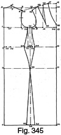

Early 1940's—Ladies' Garment Cutting and Making
by
F. R. Morris
Chapter XXIII—Bias-Cutting for Dressmakers and Model Cutters
FROM time to time, the well-known dress designers create models with intricate and unusual placement of seams; sometimes the sideseam is dispensed with, and, at other times, there may not be a waist seam in the design. The original design is probably modelled piece by piece on the stand or figure to achieve the required fit, and it is impossible to copy the line accurately by flat pattern cutting. At the other extreme, we have the moulded sheath outline, perfectly fitting to the figure and without a waist seam, darts or design seams of any description to help the cutting and fitting.
The Princess line and, at the moment, the Directoire line are of this character and present great difficulty in cutting successfully to fit without dragging creases or an excess of material in the waist. The skirt width of these models is also reduced to the absolute minimum consistent with walking room and, if the skirt is cut on the straight, a very plain and uninteresting appearance will result. The absence of a waist seam round the figure complicates the cutting, as it is impossible to allow for the extra sideseam length in the waist hollow which enables the garment to follow the shape of the wearer, and the problem is how to obtain this extra length and achieve a close fit at the same time. Many evening dresses of the moulded line are cut with a skirt perfectly plain back and front, and with a high moulded waist line upon which waist suppression cannot be manipulated. Waist darts are one method of gaining fit without a waist seam, but these are definitely impossible in the cutting of evening dresses.
The secret of cutting a moulded dress without any helpful waist or design seams lies in "bias cutting." By the term "bias cutting" is meant cutting the dress on the cross or "bias" of the material. The bias is diagonally across the width of the material and possesses stretching qualities which are necessary for the art of moulding a dress to the figure.
A knowledge of the stretching qualities of the true bias is necessary before successful bias-cutting can be carried out. It is easy to see that if a dress is cut larger than the actual measurements of the figure by means of bias-cutting, it will drop down or stretch until the degree of looseness in the fit is taken up and the garment closes in to the shape of the figure. Further, if the garment is cut too large over the hips, when the dress drops down to the hips size the bias material in the waist will stretch out in a horizontal direction and the waist size will become increasingly too loose.
Bias material stretches as follows: if one part of the material is stretched out larger, the part immediately above is reduced in width and narrows in. Therefore, if we require the dress to fit closely into the waist, we cannot achieve this by cutting the waist to the size of the figure, for if the hips are cut at all easy to measure, the waist size will stretch out larger as the dress drops down narrowly over the hips. Therefore, to ensure that the waist size remains as cut, the dress at the hips and bust must be cut exactly to the close measure to prevent stretching or dropping down when on the wearer.
But, even if this is adhered to and the bust, waist and hip measurements drafted net on the dress, we still have only a flat draft without the necessary extra length at the sideseam in the waist hollow, amounting from 1 inch to 1½ inches for a very small waist. This being so, the draft is cut to the exact net measurements at the three balance lines and is illustrated in Fig. 345.
If the dress is designed with a waist seam the garment should be curved at the bodice and skirt waist seams to enable it to follow round the lines and angles of the figure. The point to remember is that in Fig. 345 we are without any waist seams or means of providing for this length, and we know that without this length an excess amount of fullness and length will be thrown into the back waist hollow, and in addition the garment will have dragging creases from the nape of the neck to the waist.
The solution of the problem lies in the stretching properties of bias material. Now take a piece of material and find the true bias, stretch the material from side to side and then, about 14 to 16 inches lower, stretch it in the same direction. It will be found that the effect of stretching the material in these two lines will result in the material between them becoming smaller in width, and, what is still more important, an increase in length is created between the two points of stretching in each line. A practical test will demonstrate this very valuable property of bias material to anyone who cares to carry it out. From this operation, the obvious point is to cut the bust and hip measurements smaller than the actual sizes to create the extra sideseam length in the waist. The bust and hip contours stretch out the bias to decrease the width of the dress through the waist, and so cause sufficient length to be created at the sideseams to enable the garment to follow round the curves of the figure.
Another point of bias cutting is that, if the hip size of the garment is cut smaller than the actual net girth, the action of stretching the material out to fit the hips will result in a flare in the skirt at the hem line. This means that, even if the skirt is cut very narrow in width, a good-hanging skirt will be achieved instead of the converse; if the skirt were cut on the straight of the material, a perfectly straight-hanging tube effect would result.
However narrow in width at the hem line, the bias-cut skirt is infinitely more smart and comfortable in wear, for the material stretches with every movement of the wearer and does not restrict the free movement of the limbs.
The degrees of stretch in the varying materials must necessarily govern the closeness of our cutting; the usual method is to cut the garment one size smaller than the size required. This may require modifying if part of the design is cut on the bias while the remainder is cut on the straight of the grain. Very often, dresses are designed with a bias skirt from a high waist line and a bodice cut on the straight, or, as the author has designed recently for friends, a bias-cut bodice and the skirt cut on the straight. This latter method is adopted to achieve a very clean-fitting waist and hip line in the dress, for the bodice stretches down and allows the skirt to rest down over the hips.
The following basic draft is intended for use when interpreting designs without a waist seam. For bias-cut designs with a waist seam, the standard dress basis system can be used as the sideseam length can be directly obtained by pattern manipulation.
Bias-cutting Basis System (Fig. 345)
Measurements for the draft are as follows—
- Chest = 34 inches.
- Bust = 36 inches.
- Waist = 29 inches.
- Hips = 40 inches.
- Natural waist length = 15 inches.
- Full length = 43 inches.
- Half-back width = 6½ inches.
The bust and hip measurements are cut a size smaller, i.e. a 35-inch bust and 39-inch hips. The waist measure has 2 inches added for the finished dress size and is drafted to this measure net. The stretching action of the material over the bust will reduce the waist to a smaller circumference, so that it is advisable to draft this factor without any such reduction as that which takes place in the bust and hip measurements.
- Working scale = half the breast measure for bust sizes of 36 inches and under and one-third of the breast girth plus 6 inches for bust sizes over 36 inches. Therefore, the scale = 18 inches for a 36-inch breast, reduced to 17½ inches for the reduced breast girth for bias-cutting.
To draft—
Square from X.
- 1 from X = one-third of the scale plus 1½ inches.
- 2 from X = the natural waist length = 15 inches.
- 3 from 2 = 8 inches for the hip level.
- 4 from X = the full dress foundation length = 45 inches.
- 5 from X = one-sixth of scale less ¼ inch for the back neck width.
- 6 from 5 = 1 inch for the back neck height.
- Shape from 6 to X for the back neck curve.
- 7 from 1 = the half-back width.
- Square up from 7 to 8 on the line squared out from X.
- 9 from 8 = 1 inch.
- 10 from 9 = ¼ inch. Shape the back shoulder seam from 10 to 6.
- Square out from 3 to 11 half the hip girth net.
- Square up from 11 to 12, 13 and 14.
- 15 from 14 = one-twelfth of the scale.
- 16 is squared down from 11.
- 17 from 15 = one-sixth of the scale.
- 18 from 13 = half the scale less 1 inch.
- 19 from 18 = one-sixth of the scale less ¼ inch.
- Square up from 19 to 20.
- 20 from 19 = ½ inch less than 13 to 15.
- Join 20 to 10, measure the width of the back shoulder seam from 6 to 10 and apply this quantity less ½ inch from 20 to 21 for the width of the front shoulder seam.
- 22 from 21 = 1 inch.
- Shape the front shoulder seam from 20 to 22 as shown.
- The sideseam is placed mid-way of 3 to 11 at 23.
- Square up from 23 to 24 and 25 and down to 26.
- 27 from 13 = the half-bust measure plus ½ inch.
- The surplus shown from 1 to 27 is taken from the side-seams at 25 to 28 and 29.
- Square down from 28 to 30.
- Square down from 29 to 31.
- Measure from 12 to 30 plus 31 to 32 the half-waist measure, i.e. 15½ inches.
- Two-thirds of the waist surplus is taken from the back sideseam for suppression and the remaining one-third from the front sideseam.
- 35 from 31 = 32 to 33.
- 34 from 30 = 33 to 2.
- Shape the sideseams from 28 to 34 and 23 and from 29 to 35 and 23; then overlap the sideseams at the hem line 1½ inches from 26 to 36 and 1½ inches from 26 to 37.
- Shape the neck opening 9½ inches in length from 17 to 38.
- 39 from 20 = 20 to 17 for the shoulder dart.
- 40 is 1½ inches above the line from 13 to 18 and is equidistant from these two points.
- Shape out the shoulder dart from 20 and 39 to 40 as illustrated to complete the draft.
As the bias or stretch of materials is not always constant, the reduction of 1 inch for the actual bust and hips may be too much in some instances, and, for a very closely woven material with practically no stretching properties, the reduction should be modified to the actual measurements as a drafting basis.
Design seams in bias-cut dresses should be kept as near to the absolute bias or "straight" line as possible, for seams slightly off the grain in either direction tend to disturb the "hang" of the dress and, in addition, are difficult to baste and machine neatly.
Always cut on the exact bias of the material, that is, with the fold edge of the bias at an angle of forty-five degrees with the selvedge. It is false economy to attempt to save material by laying the patterns on the material slightly from the true bias, for two seams which do not have the same amount of stretch will cause any amount of trouble before a satisfactory hang is obtained, and the dressmaker will be faced with twisted seams and bias material dropping unevenly from each sideseam towards the centre of the skirt.
Bias-cutting gives us the opportunity for achieving marvellous fitting effects. A bias dress has a certain look which no dress, however well cut on the straight material, can emulate. A softly-hanging skirt may also be obtained under any conditions without endangering the achievement of a moulded hip line. In addition, the bias dress usually fits varying figures within an inch either side of the drafted size; in other words, a dress cut actually to a 34-inch breast girth will be adaptable to fitting either a 33-inch or a 35-inch breast figure. On the former, the dress will stretch down till it narrows to the decreased bust and hips circumference, while it will stretch out to the measurements of the latter figure.
It is not advisable to cut very flimsy materials on the bias, as the success of this cutting method depends on the weight of the material dropping down to achieve a moulded fit. Also a flimsy material such as chiffon or georgette would stretch out of shape at the seam edges to a degree which would make it impossible for the garment to be a good fit.
In short, bias-cutting forms a valuable stand-by for the cutter and dressmaker when a very closely fitted dress is called for, and is an inducement to produce special designs featuring stripes or checks.